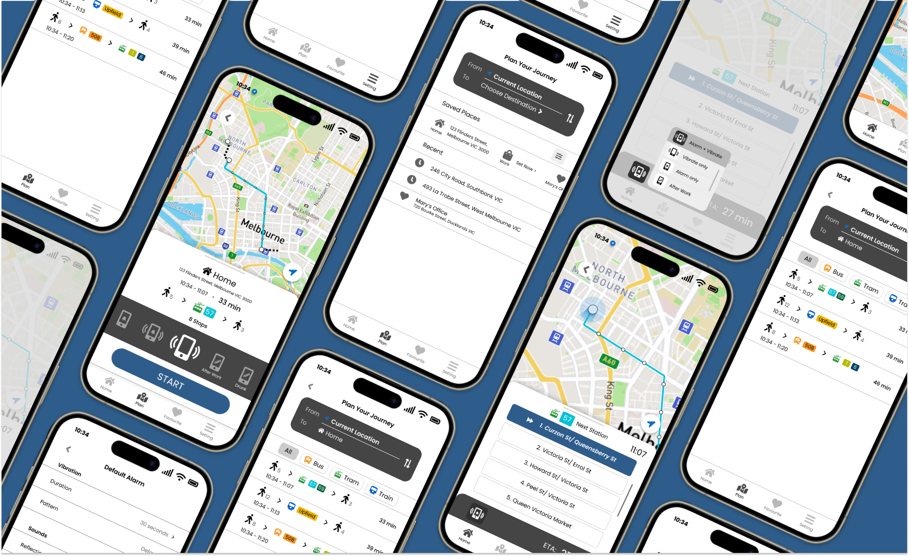
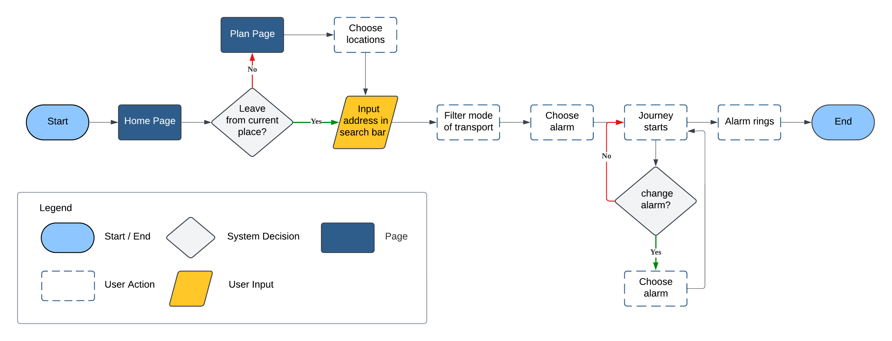
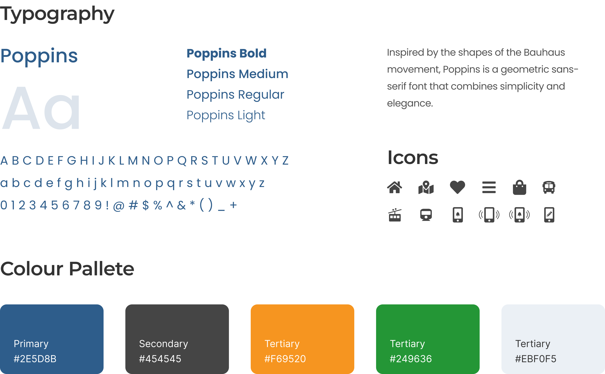

WakeNow - Location-based alarm
Mobile App Design • UX UI Design • User Research • Prototyping • Usability Testing
Project Overview
Problem
Passengers on public transport often miss their stops due to falling asleep or being distracted, making it difficult to reach their intended destinations on time.
Challenge
Designing a reliable, location-based alarm system that provides timely notifications and alerts, ensuring passengers wake up and prepare before arriving at their desired stations.
Solution
WakeNow, a mobile app that utilizes location tracking to alert sleepy passengers just before their destination, helping travellers stay informed and arrive on time.
Research Process
Objectives
To understand the needs and behaviours of public transport passengers regarding missed stops and distractions, identify their frustrations, and explore the temporary solutions they currently use to address this issue.
Methodology
01. Competitive Analysis
Analyzing existing location-based alarm and notification apps to identify their strengths and weaknesses, understand market trends, and uncover opportunities for innovation and improvement in the WakeNow app.
02. User Research
Conducting surveys and interviews with public transport passengers to gather insights into their experiences, frustrations, and current solutions for avoiding missed stops. This research will inform the design and functionality of the WakeNow app to better meet user needs.
Competitive Analysis
|
OmniBuzz |
WakeMeHere |

I've Arrived |
|
|---|---|---|---|
| Strengths |
|
|
|
| Weaknesses |
|
|
|
User Research
Survey
32
Respondents
An online poll was created via Instagram where 32 respondents voted on the following questions:
“Have you ever overslept on any public transport and missed your intended stop?”
| 24 out of 32 respondents (75%) voted yes
“Have you ever feared missing your stop in unfamiliar areas, causing you to constantly check maps or avoid sleeping?
| 30 out of 32 respondents (93.75%) voted yes
User Interview
5
Participants
- Age range: 22 - 29
- 3 Female, 2 Male
- Interview participants were chosen from a range of geographical locations and levels of public transport usage to ensure diverse perspectives.
Analysis and Planning
Affinity Mapping
After conducting the user interviews, I organized the data through affinity mapping. This process involved grouping similar responses and insights to identify common themes and patterns. The insights gathered from this exercise will guide the design and development of the WakeNow app, ensuring it addresses the key issues and needs identified by the users.
Key Findings
How Might We (HMWs)
After gathering insights from competitive analysis and user research, I have identified key challenges and opportunities that shape the exploration of innovative solutions for the WakeNow app. The following How Might We questions aim to address these insights:
- Effectively alert passengers upon reaching their intended location?
- Make the solution adaptable to different modes of transport, including buses, trams, or trains?
- Accommodate the diverse travel habits and needs of both daily commuters and occasional travellers?
Personas
Design
User Flow Diagram
Start a journey
UI Component Library
Usability Testing
The iteration compiled 5 users insights with two main tasks which are:
- Plan a trip back home with only by either trains or trams
- Select the “After Work” alarm for the trip
- Try to customise the alarm
“It is a bit confusing about the filtering option!”
“Oh, I don’t know that I can swipe the option wheel.”
“The layout while I was changing the alarm is a bit too overwhelming.”
Iteration
“All” option is added for filtering
An overlay is added and the the option wheel was changed to a scrolling menu
Final Prototype
angelwyy1021@gmail.com
@ 2024 Angel Wong